Mounting your Nikhef home directory using SSH
when Windows File Sharing is enabled
Introduction
This tutorial contains screenshots for the English version of Windows 2000/XP.
Separate instructions for other versions of Windows are also available:
To be able to mount a Windows share over SSH we will need
- Administrator access to the local computer.
- PuTTY v0.58+,
which is an excellent and free implementation of SSH for Windows.
It is assumed that you are familiar with the PuTTY user interface.
- One real or virtual network adapter with the following properties:
- Bound to the Client for Microsoft Networks.
- with TCP/IP property NetBIOS over TCP/IP enabled.
Normally you should already have such an adapter, as otherwise you
would not be able to mount any Windows shares.
- One real or virtual network adapter with the following properties:
- NOT bound to the Client for Microsoft Networks.
- NOT bound to the File and Printer Sharing
for Microsoft Networks.
- with TCP/IP property NetBIOS over TCP/IP disabled.
(Don't worry, step-by-step instructions on how to achieve this are below...)
This part of the tutorial is split into the following steps:
- As most people do not have a spare real network adapter in their computer,
we will add an extra virtual network adapter by
installing the
Microsoft Loopback Adapter.
- After that, the network adapter must be properly
configured.
- Then we set up a special
PuTTY session with the right port-forwarding.
- Finally, we start PuTTY and mount our Nikhef home
directory.
To install the Loopback adapter follow these steps:
- Go to Start->Settings->Control Panel->Add Hardware. The Hardware Wizard
will come up:
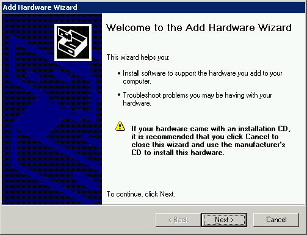
- Click Next, after which the Hardware Wizard will attempt to find new
devices. After a while, this screen will come up:
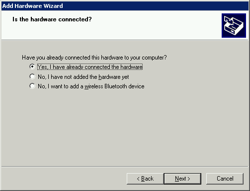
- Select Yes, then click Next, after which you'll see
a new screen:
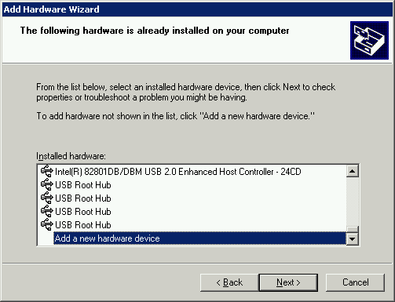
Scroll down in the list of Installed Hardware to the entry
Add a new hardware device and select it, then
click Next.
- A new screen will come up:
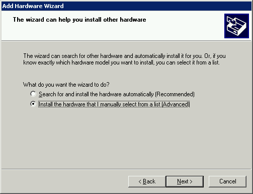
Select Install the hardware that I manually select from a list
and click Next.
- Now you'll see:
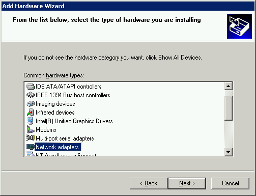
Scroll down in the list to the entry Network adapters,
select it and then click Next.
- In the next screen
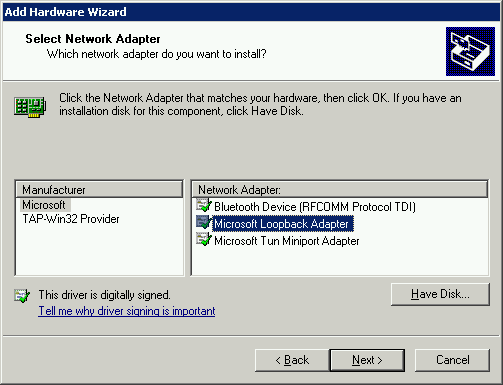
first select Microsoft from the list of Manufacturers
and then select Microsoft Loopback Adapter from the
list of Network Adapters. Finally, click Next once more.
- Almost finished:
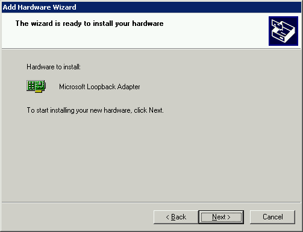
This is your last chance to abort, otherwise, click Next.
- After a while you should see:
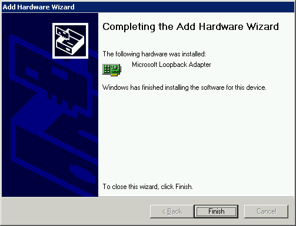
Click Finish to exit the Hardware Wizard.
You are now ready to configure your newly installed Loopback adapter. Even though
Windows might not ask you to, reboot anyways (heey, it's a Microsoft OS ;-)).
From reports I've seen on the Internet a reboot is sometimes required for the
loopback adapter to come up properly.
Now that your newly installed loopback adapter is up and running we must configure
it properly:
- Right-click on the 'Network Neighborhood' or 'My Network Places' icon on your
desktop.
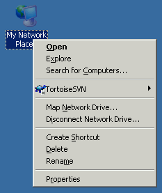
- Select Properties, after which a new window will appear.
- Choose the loopback adapter (check the column Device name to select
the appropriate adapter) and right-click on it.
- Again, choose Properties, after which a new window will appear
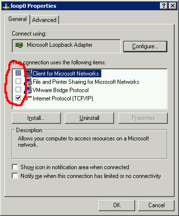
Make sure that
- the entry Client for Microsoft Networks
is NOT enabled, i.e. does not have a checkmark in front of it.
- the entry File and Printer sharing for Microsoft Networks
is NOT enabled, i.e. does not have a checkmark in front of it.
- the entry Internet Protocol (TCP/IP) is enabled.
- Select the entry Internet Protocol (TCP/IP), then click on
Properties.
- A new window will appear:
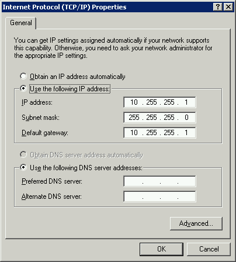
Select Use the following IP address and fill in the 'IP address'
and 'Subnet mask' as above.
It is not necessary to fill in the 'Default gateway' or a 'DNS server'.
- Click on Advanced to make the following window appear:

Deselect Automatic metric and fill in the value of 9999
as the 'Interface metric' as shown above.
- Click on the WINS tab:
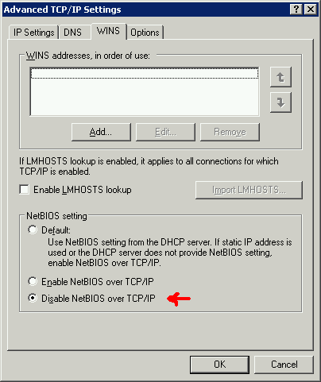
and select Disable NetBIOS over TCP/IP.
- Click on OK.
- You are now back in the main 'TCP/IP Properties' screen. Click OK again.
- You are now back in the main 'Loopback Properties' screen. Click Close.
Set up a special PuTTY session with the appropriate port-forwarding:
- Start PuTTY and create a new session or load your existing session for
logging in on
login.nikhef.nl. Choose host login.nikhef.nl
and protocol SSH.
- Expand the Connection->SSH menu option in the Category tree-list
and select Tunnels.
- Add a new forwarded port:
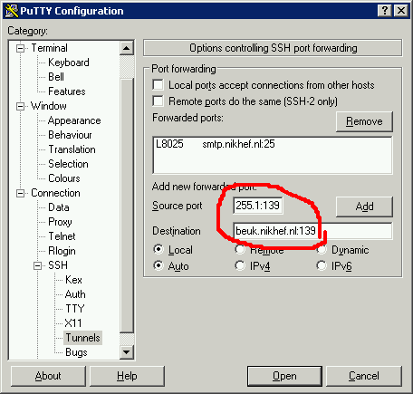
- For the Source port, fill in the IP address of your
loopback adapter, plus the port 139. The entry field might seem
to small for it, but it will work. If you have configured your
loopback adapter exactly as in the previous section, then fill in
10.255.255.1:139.
- For the Destination, fill in beuk.nikhef.nl:139.
- Click on Add.
- You should now see:
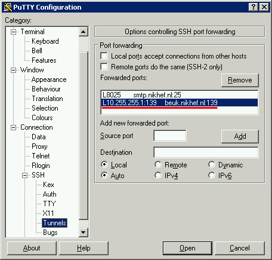
- In the Category tree-list on the left, scroll back up and choose
Session again. Save your session.
Now that we have configured both our loopback adapter and PuTTY we can put it
all together and mount our Nikhef home directory as a Windows share:
- Start your newly created Nikhef-PuTTY session and login on
login.nikhef.nl as normal.
- Make sure port-forwarding is working properly by checking the PuTTY
event log. Select the Window menu of the PuTTY screen (top left) and
select Event log. You should see a log similar to:
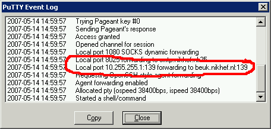
If not, then check your PuTTY session options first.
- Go to Start->Run and type
\\10.255.255.1\user\<Your-nikhef-userid>
- You will be prompted to authenticate yourself:
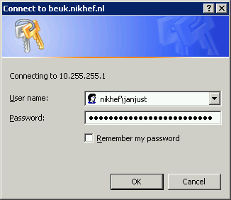
For the Username, fill in the domain NIKHEF\ followed
by your Nikhef-Windows userid.
For the Password, fill in your Nikhef-Windows password, which
might be different from the password you use to log in on
login.nikhef.nl and press OK.
- You should now see your Nikhef home directory in Windows Explorer!
Congratulations!
Mapping a network drive
To make life even easier it might be handy to map a network drive to your
Nikhef home directory:
- Start Windows Explorer and choose Tools->Map Network Drive.
- In the next screen, fill in:

- Choose an available drive letter.
- Do NOT click on Browse but type in as the Folder
name:
\\10.255.255.1\user\<Your-nikhef-userid>
- Do NOT click on Finish, click on
Different user name.
- In the next screen, fill in your Nikhef-Windows userid:

For the User name, fill in the domain NIKHEF\ followed
by your Nikhef-Windows userid.
For the Password, fill in your Nikhef-Windows password, which
might be different from the password you use to log in on
login.nikhef.nl and press OK.
- Click on Finish to complete the network drive mapping.
- You should now see a new drive letter appear in the Folders tree-list
in Windows Explorer. Click on it to verify that you are indeed viewing your
Nikhef home directory.